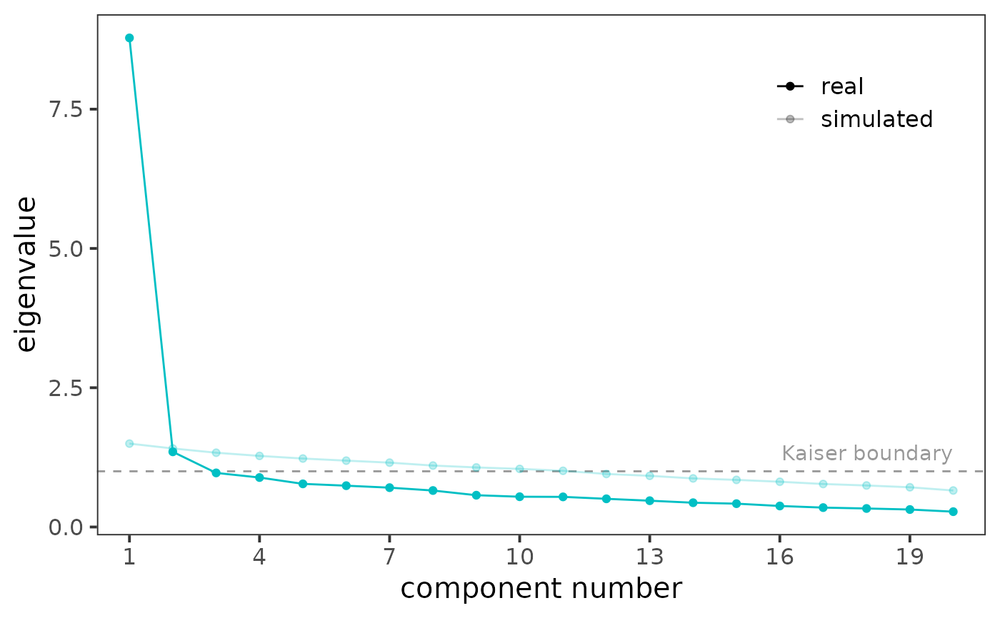

Computes the eigenvalues of the sample correlation matrix and the eigenvalues obtained from a random correlation matrix for which no factors/components are assumed. By default, the function utilizes a modified Horn's (1965) method, which -- instead of mean -- uses 95th percentile of each item eigenvalues sampling distribution as a threshold to find the optimal number of factors/components.
fa_parallel( Data, cor = "pearson", n_obs = NULL, method = "pca", threshold = "quantile", p = 0.95, n_iter = 20, plot = TRUE, show_kaiser = TRUE, fm = "minres", use = "pairwise", ... )
| Data | data.frame or matrix, dataset (where rows are observations and columns items) or correlation matrix (recognized automatically). |
|---|---|
| cor | character, how to calculate the correlation matrix of the
real data. Can be either |
| n_obs | integer, in case you provided the correlation matrix directly as the input, you have to provide the number of observations in the original dataset. |
| method | character, either |
| threshold | character, whether to use traditionall Horn's method
or more recent and well-performing quantile one. Either |
| p | numeric (0--1), probability for which the sample quantile is
produced. Defaults to |
| n_iter | integer, number of iterations, i.e. the number of
zero-factor multivariate normal distributions to sample. Defaults to
|
| plot | logical, if |
| show_kaiser | logical, whether to show Kaiser boundary in the plot (the default) or not. |
| fm | |
| use | an optional character string giving a
method for computing covariances in the presence
of missing values. This must be (an abbreviation of) one of the strings
|
| ... | Arguments passed on to
|
An object of class data.frame and sia_parallel. Can be
plotted using plot().
Horn proposed a solution to the problem of optimal factor number identification using an approach based on a Monte Carlo simulation.
First, several (20 by default) zero-factor p-variate normal
distributions (where p is the number of columns) are obtained, and
p × p correlation matrices are computed for them. Eigenvalues
of each matrix is then calculated in order to get an eigenvalues sampling
distribution for each simulated variable.
Traditionally, Horn obtains an average of each sampling distribution and these averages are used as a threshold which is compared with eigenvalues of the original, real data. However, usage of the mean was later disputed by Buja & Eyuboglu (1992), and 95th percentile of eigenvalues sampling distribution was suggested as a more accurate threshold. This, more recent method is used by default in the function.
Horn, J. L. (1965). A rationale and test for the number of factors in factor analysis. Psychometrika, 30, 179--185. doi: 10.1007/BF02289447
Buja, A., & Eyuboglu, N. (1992). Remarks on parallel analysis. Multivariate Behavioral Research, 27, 509--540. doi: 10.1207/s15327906mbr2704_2
Jan Netik
Institute of Computer Science of the Czech Academy of Sciences
netik@cs.cas.cz
Patricia Martinkova
Institute of Computer Science of the Czech Academy of Sciences
martinkova@cs.cas.cz
data("TestAnxietyCor", package = "ShinyItemAnalysis") fa_parallel(TestAnxietyCor, n_obs = 335, method = "pca")#> #>#> According to the parallel analysis, the optimal number of principal components is 1. #> Following the Kaiser rule, 2 components are recommended.if (FALSE) { data("bfi", package = "psych") items <- bfi[, 1:25] fa_parallel(items) fa_parallel(items, threshold = "mean") # traditional Horn's method }